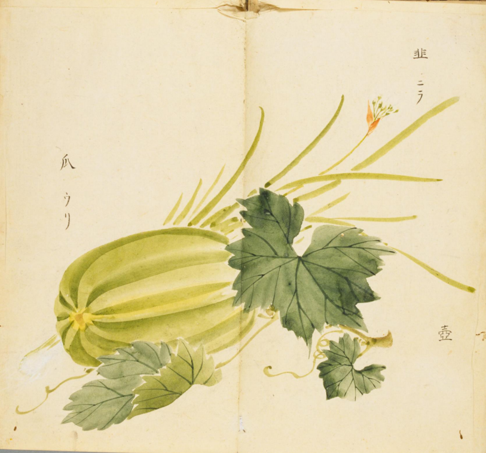
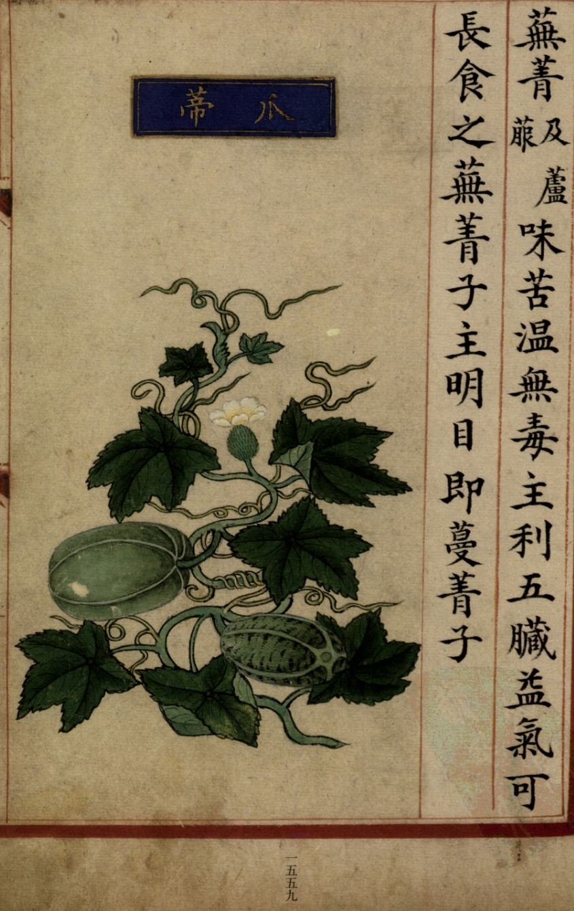
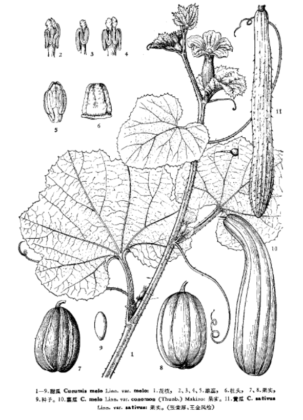

出现篇目
古代记载 《毛诗故训传》
瓜，绍也。瓞，瓝也。（《毛传》注《绵》）
《毛诗正义》
正义曰：绵绵，微细之辞，故云不绝貌也。《释草》云：“瓞，瓝，其绍瓞。”舍人曰：“瓞名瓝，小瓜也。绍继谓瓞子。汉中小瓜曰瓞。”孙炎曰：“瓞，小瓜，子如瓝。其本子小。绍先岁之瓜曰瓞。”然则瓜之族类本有二种，大者曰瓜，小者曰瓞，此则其种别也。而瓜蔓近本之瓜，必小於先岁之大瓜，以其小如瓝，故谓之瓞。瓞是瓝之别名，故云“瓞，瓝也”。（《毛诗正义》疏《绵》）
当代记载 《中国植物志》
甜瓜 （Cucumis melo），葫芦科，黄瓜属植物。一年生匍匐或攀援草本。卷须纤细，单一，被微柔毛。叶片厚纸质，近圆形或肾形，长、宽均8-15厘米。花单性，雌雄同株。雄花：数朵簇生于叶腋；花冠黄色，长2厘米，裂片卵状长圆形，急尖。雌花：单生；子房长椭圆形，花柱长1-2毫米，柱头靠合。果实的形状、颜色因品种而异，通常为球形或长椭圆形，果皮平滑，有纵沟纹，或斑纹，无刺状突起，果肉白色、黄色或绿色，有香甜味。花果期夏季。全国各地广泛栽培。世界温带至热带地区也广泛栽培。

<细井徇>

<补遗雷公炮制便览>

<中国植物志>